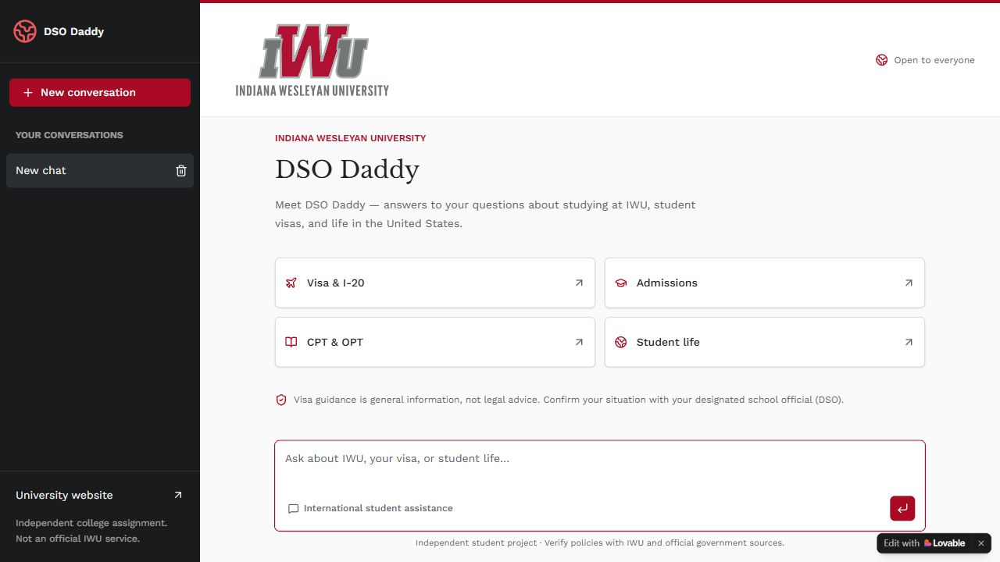

Artifact 1
Artifact Title
DSO Daddy
A conversational AI prototype for international-student questions at IWU.
Introduction
DSO Daddy explores conversational support for international students studying at Indiana Wesleyan University. The idea grew from familiarity with questions about student visas and studying in the United States.
Artifact Description
The Lovable-based prototype offers a chat input and topic entry points for Visa & I-20, Admissions, CPT & OPT, and Student life.

Objective:
Make international-student information easier to approach through a conversational interface, with referral to a designated school official or immigration lawyer when needed.
Process:
Group project developed in the AI Lab.
My contribution: I contributed to ideation, choosing the problem, testing prompts, and planning the assistant.
1. Choose the problem and scope. I helped select international-student support as the problem, with an initial focus on student-related visa questions before broader work-visa topics.
2. Plan guardrails and escalation. During ideation, I focused on the assistant’s boundaries: it should answer questions without giving legal advice or taking action on behalf of a designated school official. Deciding when it should escalate a question was one of the most challenging planning decisions. The intended role was to provide information and refer users to a DSO when necessary.
3. Explore prompts. The recorded activity used ChatGPT, Claude, and Copilot with the initial question: “What documents are needed for travel on OPT?” Other questions covered entering the United States and transferring schools.
4. Select a platform. Deployment was another challenge to work through. We explored Chatbase before settling on Lovable because it made prototyping and deployment easier.
Tools and Technologies Used:
1. ChatGPT, Claude, and Copilot: initial prompt exploration.
2. Lovable: prototype development and hosting.
3. Chatbase: platform exploration.
Value Proposition and Audience
Personal Value Proposition:
I turn complex workflows and data into reliable, usable software. This artifact connects that focus to framing a useful AI application and planning its boundaries.
Target Audience:
Employers and collaborators assessing my software engineering and applied AI work. The prototype itself is intended for international students with questions about studying at IWU.
Artifact-Specific Value Proposition
Unique Value:
This artifact shows my contribution to problem selection, prompt exploration, and planning an AI assistant’s scope and referral boundaries. The live prototype, screenshot, and brief make those decisions visible alongside the interface.
Relevance:
It supports my personal value proposition by showing how I approach making a complex information workflow easier to use. Employers can assess the planning behind the prototype and understand the limits of the work.
Customization for Audience
Adaptations Made:
I turned informal AI Lab notes into a case study and downloadable project brief. I included a live prototype link and screenshot, organized the objective, process, and tools explicitly, and identified my own contribution. I also separated intended guardrails from results that have actually been verified.
Relevance:
These adaptations give employers a clear account of my reasoning and role. Readers can explore the prototype while understanding its purpose and limitations.
Current Limitations
DSO Daddy is an independent student prototype, not an official IWU service or a source of legal advice. The available documentation does not establish answer accuracy, complete official-source coverage, a retrieval architecture, tested escalation behavior, comparative model performance, or measured student outcomes.
References
DSO Daddy planning notes (unpublished) and my account of assistant planning and platform selection.